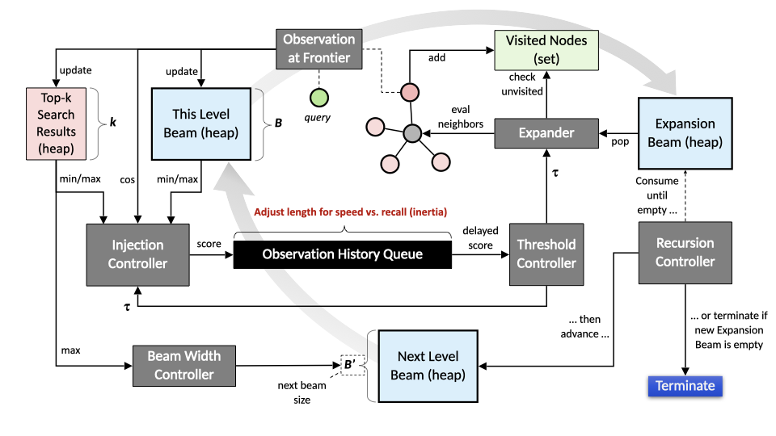
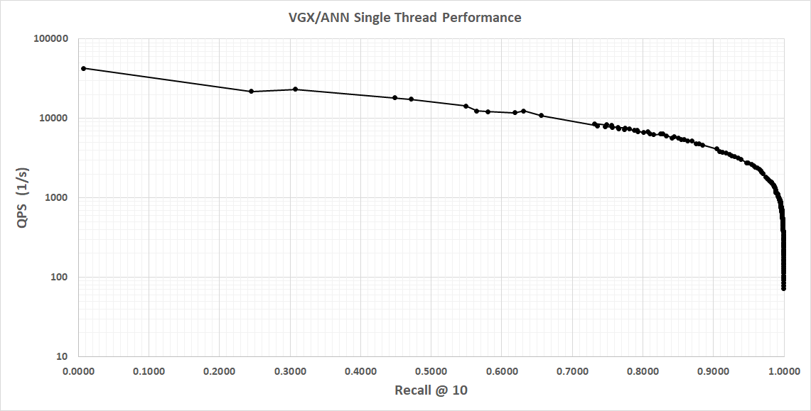
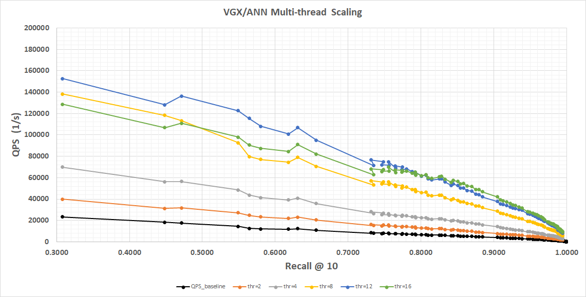

1. Overview
Navigation search is a powerful feature for automatically exploring a graph to collect top matching items ranked by some scoring formula. For navigation to be efficient and successful in finding the best matches, the graph network must be constructed in accordance with some proximity metric where each vertex is connected to a small set of neighbors that are closely related in some way. It is usually desirable for such a graph to be strongly connected, where a path exists from any starting point to any other vertex in the graph.
A proximity graph using vectors to express similarity is a prime target for this type of explorative traversal. Such a graph is often a navigable nearest-neighbor construction with diverse local neighborhoods covering both short and occasional longer range hops. This allows efficient implementation of Approximate Nearest Neighbor (ANN) Search. The search condition is expressed as a probe vector and the navigation algorithm then explores the graph from a starting point (which can be any node), automatically finding paths to regions of the graph containing items whose vectors are most similar to the probe.
2. Navigation Control Parameters
Neighborhood navigation offers many optional control parameters for the search process:
g.Neighborhood(
id = start_node,
hits = 10,
navigation = {
# Main meta-parameter
'bias': B, # Main recall vs. speed control
# Search target
'vector': v, # Probe for similarity search
'filter': f, # Arbitrary filter per visited node
# Frontier observation history
'result_capacity': H, # Size of top best matches set
'inertia': I, # Size of history for estimation
# Limits
'queue_limit': F, # Frontier queue size (non-beam)
'expansion_limit': E, # Max number of node expansions
'depth_limit': D, # Max neighborhood hops from start
'exec_ms_limit': X, # Max execution time
'visit_limit': V, # Max node visits
# Beam search
'entry_width': w, # Size of initial beam
'beam_width': W, # Initial beam width
'beam_min': L, # Min beam width
'beam_max': H, # Max beam width
'beam_decay': C, # Beam narrowing bias
'adaptive_beam': A, # Use dynamic beam True/False
# Optimizations
'alpha': a, # Depth discount (expansion thres.)
'beta': b, # Evals discount (expansion thres.)
'gamma': g, # Global offset (expansion thres.)
'delta': d, # Beam controller reactivity
'epsilon': e, # Score contrib. thres. offset
'zeta': z, # Smoothing factor for thres. EMA
'omega': O, # All optimizations weight
# Traversal thinning
'kappa': k, # Arc trav. thinning above thres.
'lambda': l, # Arc trav. thinning rule
# State management
'reset_metrics': r, # Reset counters from last query
'reset_map': R # Reset visited node map
}
}It is rarely necessary to use most of these parameters in a production setting, but they can be useful when developing proximity graph construction algorithms or for debugging. Most of the time the bias setting is enough to choose a suitable tradeoff between recall and search speed. Its value ranges from -100.0 (max speed) to 100.0 (max recall) and automatically adjusts all other navigation controls to achieve desired performance. When a specific parameter value is provided it overrides the default determined by bias.
| Parameter | Type | Default | Min | Max | Description |
|---|---|---|---|---|---|
Main Meta-parameter |
|||||
float |
0.0 |
-100.0 |
100.0 |
Main recall vs. speed control: Negative values favor speed, positive values favor recall. This single knob automatically tunes all other parameters. |
|
Search Target and Filter |
|||||
Euclidean Vector or list |
None |
Probe vector for similarity search: Uses Cosine similarity. All nodes must have an assigned vector. |
|||
str |
None |
Custom filter applied to every visited node using the expression language (must be a local evaluator) |
|||
Frontier Observation History |
|||||
int |
auto |
0 |
1048576 |
Size of the top-k result heap: Larger values can sometimes improve recall |
|
int |
auto |
-1 |
1048576 |
Length of the frontier observation history: Controls how quickly the threshold adapts — the primary driver of recall vs. speed |
|
Limits |
|||||
int |
auto |
0 |
1048576 |
Use a classic queue instead of beam search (rarely better, but useful to test) |
|
int |
unlimited |
0 |
2147483647 |
Maximum number of node expansions |
|
int |
1024 |
0 |
2147483647 |
Maximum hops from the entry point |
|
int |
unlimited |
-1 |
2147483647 |
Hard time limit (highly recommended in production) |
|
int |
unlimited |
0 |
2147483647 |
Maximum nodes visited (guards memory usage) |
|
Beam Search |
|||||
int |
auto |
0 |
1024 |
Number of diverse entry points to use from a synthetic hub node |
|
int |
auto |
0 |
65536 |
Initial beam size |
|
int |
auto |
1 / 0 |
65536 |
Bounds for adaptive beam. |
|
float |
auto |
0.0 |
1.0 |
Beam narrowing factor per depth level. |
|
bool |
auto |
Enable dynamic beam adjustment based on result improvement. |
|||
Optimizations (advanced) |
|||||
float |
auto |
various |
various |
Fine-grained controls for threshold calculation, depth discounting, beam reactivity, and smoothing. Most users never touch these. |
|
Traversal Thinning (advanced) |
|||||
int |
0 |
0 |
256 / 7 |
Skip low-priority arcs for extra speed in rough searches |
|
State Management |
|||||
bool |
True |
Controls carry-over behavior when reusing an external |
|||
- bias
-
Main recall vs. speed control
This is normally the only parameter needed to dial in the desired search performance.
- vector
-
Probe for similarity search
When given, the navigation algorithm uses Cosine similarity to evaluate nodes in the graph against the probe. All graph nodes must have a vector assigned for the search to work.
Similarity scores are in the range [0.0 - 2.0], computed as 1 + Cosine(probe, node). This is to avoid negative scores, which internally would terminate certain search paths prematurely. - filter
-
Arbitrary filter per visited node
Use the expression language to add custom filters applied to any visited node during graph exploration. The expression must be a local evaluator, i.e. it cannot reference any of the
next*arc attributes or head vertex attributes/properties, or perform anystage*()orcollect*()operations. - result_capacity
-
Size of internal top-k result heap
This heap can be made larger than needed to hold k hits which in some cases may increase the ability to find true nearest neighbors. Effective result_capacity is never lower than k given by Neighborhood( hits=k ).
- inertia
-
Length of frontier observation history
Navigation is controlled by a running threshold estimate which must be exceeded for a candidate node to be considered for the result and to facilitate continued traversal. This threshold is computed from a delayed observation at the frontier. High inertia leads to more aggressive exploration (higher recall) due to a slowly rising threshold. Low inertia does the opposite, causing the threshold to rise quickly thus terminating the search sooner (lower latency.)
- queue_limit
-
Frontier queue size
A positive number selects a queue-based frontier for the navigation algorithm. By default the frontier is maintained in a beam (heap) which is populated from scratch at every new level of expansion depth and then fully consumed at the next depth. However, selecting a queue-based frontier changes this behavor. The frontier queue is continually populated and consumed, causing it to grow rapidly at first and then later consumed to exhaustion.
Beam search is usually preferred for both speed an recall, but the frontier queue option may perform better for some performance targets on some data sets. - expansion_limit
-
Max number of node expansions
A visited node that was accepted into the frontier will later facilitate further exploration (if its score is still above the running threshold.) The process of exploring a node’s neighborhood is called expansion. Set expansion_limit to restrict how many neighborhoods will be explored before terminating the search.
- depth_limit
-
Max neighborhood hops from search entry point
Navigation is performed by expanding frontier nodes (i.e. searching their neighborhoods.) This activity adds new promising nodes to the frontier. When all frontier nodes that were present at start of expansion have been consumed the algorithm moves one level deeper into the graph, now expanding nodes that were recently added to the frontier. Set depth_limit to restrict max distance (hops) from the entry point before terminating the search.
- exec_ms_limit
-
Max execution time in milliseconds
Use this to set a maximum allowed search time. Navigation search always carries some risk of runaway execution (in pathological graphs.) Production services should set a timeout to prevent unexpected edge cases from destabilizing the system. (A reasonable upper limit would be something like 2 times the 99.9th latency percentile.)
- visit_limit
-
Max node visits
Navigation search visits graph nodes to evaluate them. Some nodes are accepted into the result or the frontier, most are discarded. As the graph is explored the number of visited nodes grows. All visited nodes are recorded in a set to prevent cyclic exploration. The visited node set consumes memory. To avoid unbounded memory usage visit_limit can be set to terminate the search after a maximum number of node visits.
- entry_width
-
Number of initial search entry points
If the proximity graph is constructed with a synthetic entry point, use entry_width to pick the number of starting nodes in the graph. This is helpful if the synthetic entry point connects to a maximally diverse set of nodes in the graph. Selecting the top best entry_point nodes as seeds for navigation can help speed up convergence and generally leads to better performance. For example, a synthetic entry point may be connected to 500 diverse (mutually unrelated) nodes. Selecting five of these using entry_width=5 helps give the search a flying start by teleporting straight into potentially relevant graph regions.
- beam_width
-
Initial beam width
Beam search uses a focused frontier of promising nodes captured into a heap of a certain max size (beam_width.) As better nodes are discovered, inferior nodes are evicted from the beam. Once all nodes in the previous beam have been expanded a new beam (just built) takes its place and search continues. The initial beam is a special case and consists of all neighbors of the start node. When expansion of a previous beam results in an empty new beam (zero promising nodes found) search terminates. Use beam_width to set the max number of promising nodes captured at each level of expansion depth.
Parameters beam_decay and adaptive_beam may cause beam width to be adjusted as the search progresses. - beam_min
-
Min beam width
The smallest beam permitted if beam width is subject to adjustment during search.
- beam_max
-
Max beam width
The largest beam permitted if beam width is subject to adjustment during search.
- beam_decay
-
Beam narrowing bias
At each level of expansion (hops from entry point) the next level’s beam width will be the current level’s beam width multiplied by beam_decay. Values lower than 1.0 then gradually shrinks the beam width (but never below beam_min.)
- adaptive_beam
-
Use dynamic beam True/False
The optimal beam width is both data dependent and query dependent. When adaptive_beam is True the algorithm adjusts beam width automatically for each query by measuring result set improvement during search. When the result set is quickly improving with new, better items the beam becomes narrower. When search stagnates without finding better items the beam becomes wider (but never above beam_max.) If beam_decay is less than 1.0 the narrowing bias is applied on top of the adaptive width.
- alpha
-
Depth discount for expansion threshold
To expand a frontier node its score must be greater than the current threshold. Depth discount alpha adjusts the effective threshold used when deciding if a node should be expanded. Higher values (above -1.0) make the gate more permissive with exploration depth, i.e. a node many hops away from the entry point may be expanded even if its score is slightly below the current threshold. Conversely, lower values (below -1.0) make the gate stricter with exploration depth, thereby expediting termination as neighborhoods far from the entry point are reached.
alpha = -1.0 disables depth discount (not 0.0.) - beta
-
Evaluation discount for expansion threshold
To expand a frontier node its score must be greater than the current threshold. Evaluation discount beta adjusts the effective threshold used when deciding if a node should be expanded. Higher values (above 0.0) make the gate more permissive as the number of visited nodes grows, i.e. a node visited late in the search may still be expanded even if its score is slightly below the current threshold. Conversely, lower values (below 0.0) make the gate stricter as the number of visited nodes grows, thereby promoting faster termination after many node visits. Evaluation discount is disabled with beta = 0.0.
- gamma
-
Global offset for expansion threshold
To expand a frontier node its score must be greater than the current threshold. Global offset gamma adjusts the effective threshold used when deciding if a node should be expanded. Higher values (above 0.0) make the gate more permissive and lower values (below 0.0) make the gate stricter. Global offset is disabled with gamma = 0.0.
- delta
-
Beam controller reactivity
When adaptive_beam is enabled the beam controller adjusts beam width automatically based on how successful search currently is at improving the result set. When the result is improving quickly the beam is narrowed, and when result improvement stagnates the beam is widened. Modulation strength can be adjusted using controller reactivity delta. Higher values modulates width more strongly and lower values lessen the effect of the beam controller. Nominal control is obtained with delta = 0.0 and the controller is disabled with delta = -1.0.
- epsilon
-
Score contribution threshold offset
Visited nodes are evaluated using a scoring function. (For vector similarity this function is
score = Cosine(probe, node) + 1.0.) If a node’s score is at or above the current threshold it counts as an observation at the frontier and is injected into the observation history queue whose size is determined by inertia. (The node may also be entered into the result and/or frontier if its score is good enough.) Conversely, if the node’s score is below the current threshold the score is ignored and instead the current threshold is injected into the history queue, representing a sample-and-hold observation at the frontier. A non-zero epsilon modifies the current threshold used when making these decisions. Positive epsilon values increase difficulty and negative values make the gate more permissive. +} NOTE: Normally, use tiny epsilon values. For reference, the automatic values derived from bias are in the range -0.00067 to 0.001. (The parameter’s large range -1.0 to 1.0 is intended for special use cases and debugging.) - zeta
-
Smoothing factor for running threshold EMA
At the end of the observation history queue (whose length is controlled by inertia) sits an exponential moving average smoothing function. Its purpose is to prevent outlier samples observed at the frontier from abruptly changing the threshold used by the expansion controller and node evaluator. Infinite smoothing is obtained with zeta = 0.0, i.e. threshold never changes from its initial (0.0) value. Smoothing is disabled with zeta = 1.0, i.e. raw (delayed) frontier observations are presented as current threshold.
For reference, default zeta = 0.2 for most bias settings. - omega
-
All optimizations weight
This parameter applies weighted adjustment to alpha, beta, gamma, delta, epsilon, and zeta simultaneously. Its purpose is to temper (omega < 1.0) the individually optimized parameters for better navigation stability. During custom performance tuning it is easy to over-tune individual parameters to maximize their effects. This can sometimes push the algorithm to the edge of stability. It is often a good idea to dial back these individual settings with omega < 1.0. Experimenting with omega can help finalize performance tuning by allowing slight adjustments to multiple parameters at the same time.
- kappa
-
Arc traversal thinning threshold
If the graph uses arcs with modifier
M_INTto connect nodes and the values of those arcs indicate priority (where 0 is highest), then kappa may be used to enable traversal thinning. A value kappa=1 or higher tells the algorithm to apply a thinning rule (via lambda) to possibly skip arcs with priority >= kappa. This can be useful for rough searches that need extra speed, as part of evaluating overall graph structure during build, debugging, or other special use cases. Normally this parameter should be left at 0. - lambda
-
Arc traversal thinning rule
If kappa is > 0 then lambda determines which arcs (whose value >= kappa) will be ignored. Skipping rule for arcs with value >= kappa is as follows for different values of lambda: 0=skip ALL, 1=skip 50%, 2=75%, 3=88%, 4=94%, 5=97%, 6=98%, 7=99%.
- reset_metrics
-
Reset counters from last query
When using an externally managed
pyvgx.Memoryobject m with Neighborhood( memory=m, … ) various internal counters and beam width control variables are accumulated inside m. If reset_metrics=False when re-using a memory object these counters and control variables will continue to accumulate. This can be useful for debugging or for special cases where search is manually divided into multiple Neighborhood() calls.Some internal counters are visible and may be accessed via
m.countersattribute. The return value is a tuple:(score_evaluations, threshold_contributions, accepted_into_frontier, accepted_into_result, recursion_depth, node_expansions, node_visits, node_revisits_avoided). - reset_map
-
Reset visited node map
When using an externally managed pyvgx.Memory object m with Neighborhood( memory=m, … ) the node visitation set built during traversal is kept inside m. If reset_map=False when re-using a memory object with another Neighborhood() query the visitation set is remembered and will prevent visiting the same nodes visited in the previous query. This can be useful for debugging or when search is manually divided into multiple Neighborhood() calls with different entry points.
Nodes that should not be visited can be added to the Memory object before calling Neighborhood(). Use pyvgx.Memory.VSetAdd( vertex_id )to pre-populate the visited set.

3. Approximate Nearest Neighbor (ANN) Search
Neighborhood Navigation turns the graph into a high-performance Approximate Nearest Neighbor (ANN) engine. Instead of brute-force scanning every vector, the algorithm treats similarity search as an intelligent routing problem across a pre-built proximity graph.
You supply a probe vector, and the engine efficiently explores only the most promising regions of the graph, delivering excellent recall at very high speed.
g.Neighborhood(
id = start_node, # or synthetic entry point
hits = 10,
navigation = {
'vector': probe_vector
}
)This approach is powerful because the graph and vector search are deeply integrated in a single in-memory engine. The same structure that makes graph traversal fast also makes vector search fast. There is no separate index to maintain, no data duplication, and seamless hybrid graph + vector queries.
3.1. How Vector Search Works
Traditional vector search must solve a hard problem: in high-dimensional space there is no efficient lookup path, so exact search requires scanning everything (brute force). ANN methods trade a tiny amount of accuracy for massive speed gains by structuring the data so that large irrelevant regions can be skipped early.
This engine uses a single-layer proximity graph (a sparse, navigable nearest-neighbor network). Each node is connected to a small set of diverse nearby neighbors in vector space. This creates:
-
Locality-aware connectivity: Edges point toward similar vectors
-
Navigability: Greedy traversal can iteratively move toward better matches
-
Low diameter + global entry points: We reach relevant regions quickly from a good starting node
The navigation algorithm starts at an entry point (any node or a synthetic diverse hub) and maintains a dynamic frontier of promising candidates. At every step it:
-
Evaluates vectors using Cosine similarity (converted to [0.0–2.0] range for internal stability)
-
Updates a running threshold based on frontier observations
-
Expands only neighborhoods that show sufficient promise
-
Dynamically adjusts beam width: narrow when results improve quickly, wider when search stagnates
This signal-driven behavior (commit early, expand only when justified) is the core reason for both speed and stable recall.
3.2. High Performance
The combination of graph structure and adaptive navigation gives several unique advantages:
-
Graph-native routing: Similarity becomes a pathfinding problem instead of a search problem. Good paths are self-reinforcing; bad regions are pruned early.
-
Dynamic beam + inertia control: The main bias parameter controls the entire recall/speed tradeoff. Short observation history → fast termination. Long history → aggressive exploration.
-
Early commitment + late expansion: Strong selection pressure at the frontier prevents wasteful branching.
-
Synthetic entry points: A single start-hub node connected to hundreds of diverse vectors gives instant global coverage, dramatically accelerating convergence.
-
Tight engine integration: All operations run in the same highly optimized in-memory runtime with excellent cache behavior and minimal overhead.
-
Hybrid readiness: It is possible to combine vector navigation with graph topology, filters, and custom scoring in one query.
3.2.1. Performance Example
These numbers represent single-threaded query performance measured on Apple M4 Max, using 1.4 million 128-D vectors.
| bias | recall@10 | QPS | Notes |
|---|---|---|---|
-100 |
0.008 |
42800 |
Maximum speed |
-99 |
0.246 |
21935.8 |
High speed, rough semantic recall |
-95 |
0.549 |
14419 |
|
-90 |
0.657 |
10892 |
|
-75 |
0.801 |
6657 |
|
-60 |
0.8799 |
4827.6 |
Balanced |
-50 |
0.939 |
3078 |
|
-25 |
0.989 |
1232 |
|
0 |
0.994 |
881 |
Very high recall |
25 |
0.997 |
719 |
|
50 |
0.9981 |
550 |
|
75 |
0.9996 |
268 |
Near-exhaustive |
90 |
0.9998 |
144 |
|
100 |
0.9999 |
71 |
Maximum recall |
3.2.2. Speed/Recall Curve
Single threaded performance on Apple M4 MAX, 1.4M vectors, 128-dim is shown below.

Multi-threaded scaling is shown below. Again, this is measured on Apple M4 MAX, 1.4M vectors, 128-dim, using a linear vertical scale to better show scaling behavior.
Notice memory bus saturation causing 16-thread performance to be worse in the low recall regime until we reach recall=0.8, after which workload starts to become CPU-bound and 16 threads show marginal benefit.
Overall, in the recall regimes that matter for typical production use we scale almost linearly with CPU core count.
